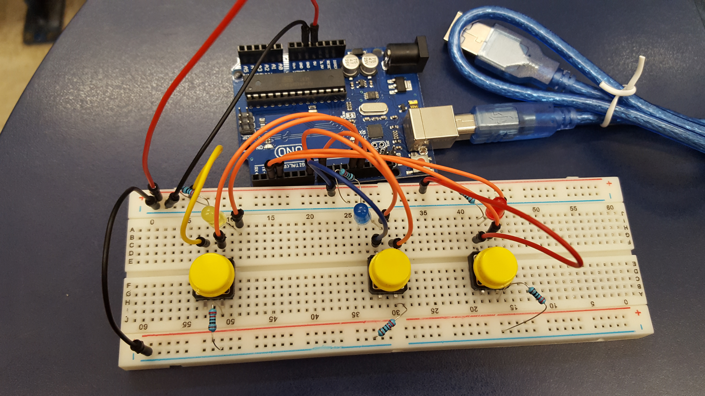
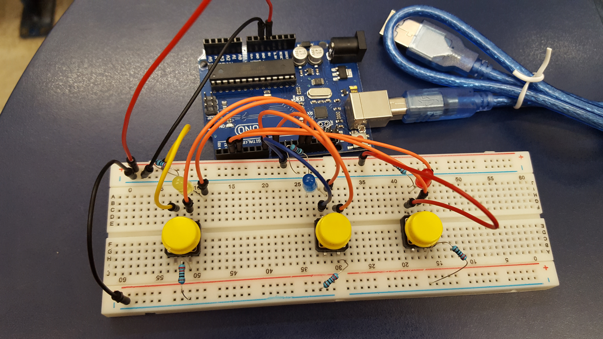

ALTERNATE CONTROLLER BLOG
Handy Magic Update and Summary
Handy Magic is a game inspired by a combination of the Harry Potter world and Naruto hand signs. My original plan for this game was to have two Kinects and gloves with flex sensors along every finger of both hands for two players. The players could then play in a practice mode to learn spell combinations or a two player duel mode where they would face each other and play to the DEATH!!! For a more in-depth description of the original concept, reference the magic duels section of my project brainstorming post.
In the final iteration of the game, there is still a practice mode and a dueling mode. In practice mode, one player wears a pair of gloves and attempts to create spells that are composed of two elements each and are defined as attack or defense. The faster they can accurately recreate the spell displayed on the screen for a limited amount of time, the more points they will receive. The dueling mode is a bit different from my original plan since it was a bit harder to implement in this amount of time than expected (explained more below). So now players sit side by side and create spells on each of their pair of gloves which will deplete a small amount of the opponent's health over time as displayed on the screen or negate the damage afflicted on them. The goal in this mode is to deplete your opponent's health all the way before your own health is completely depleted. For the controller, instead of using Kinects and gloves with flex sensors, we ended up using conductive fabric sewn into gloves. We also implemented wizard hats for each player to act as a physical visual representation of the current attack spells that player is using (more on this below).
Working with Duncan Smith, Matthew Sandfrey, Theoren Mathias, and Aubrey Isaacman, Handy Magic has gone through a series of iterations before it reached its current form.
We started by planning out to formatting of the gloves. We looked up the pricing of flex sensors and contemplated the reliability of hand-made flex sensors and ultimately decided to just use conductive tape to create our gloves instead. After doing a lot of body-storming, we also decided that using the Kinect sensors would not work well with the way we wanted the gestures to work with the gloves and therefore scrapped the plan to use Kinects as well. Below are some preliminary sketches of how the gloves would be set up. Our original plan initially incorporated photo resistors and mics, but for sake of time, this idea was scrapped too. For a more in-depth description of how the photo resistors and mics would have worked in the game-play, read this post.
With this glove set-up, each of the three fingers on each hand with conductive tape running up them represent earth, air, water, fire, attack, or defense which create a spell when two elements and either attack or defense is selected. This method of preforming three gestures to create a spell is reminiscent of Naruto hand signs and makes it so that each spell intuitively makes sense with what elements would need to be combined to create a certain spell. This greatly reduces the amount of memorization needed and makes the game feel more natural.
We originally used conductive tape on white gloves (as seen below) because that was the best way we could think of to make circuits on gloves. We found, however, that we would need to use excessive amounts of insulation tape over as much of the conductive tape as possible to stabilize the values of the completed circuits. Due to this issue, the gloves became very stiff making it hard to move as well as fragile as the insulation tape peeled as you tried to bend your hand into different gestures.
Using these gloves, we did get a functioning single player practice mode which works as described in the short description at the beginning of this post and in more depth here on how the input from gloves work with the game play. Below is also a video of this working practice mode and conductive tape gloves.
After this first attempt at "magic gloves" using conductive tape, Kate Compton suggested the use of conductive fabric which sounded like a much more comfortable alternative to stiff tape covered in insulation tape. Little did we know the time suck that hand sewing would be. Being in charge of this task, I persevered through hours and hours of sewing. After testing the first set of gloves, we found that the strip across the palm was connecting with the finger input strips through the gloves and creating unintentional connections. As a result, I had to seam rip the horizontal palm strip and sew it back on only to the outer glove layer so that I could place insulation tape on the inside layer between the horizontal and vertical conductive fabric strips which solved the issue. Below you can see the gloves with words dictating which finger represents which input on electrical tape on each finger. In the last picture, you can see the final design of the gloves with symbols drawn onto each finger instead of written out.
On top of not needing as much insulation tape which added to them being more comfortable than the conductive tape version of the gloves, these gloves were also a lot more responsive than the conductive tape gloves. Below is a game play video showing the new conductive gloves working with the practice mode accompanied by Matthew explaining how the game works.
Next, I worked on the wizard hats which were intended to help players know what type of attack the opponent had used on them without having to look at the screen. We started off my coming up with better combination names for the elements. After that, I sketched out icon ideas before cutting shapes out of fabric and drawing the icons on to each. I then sewed all these patches onto the the hats in a way that they would all be visible while a player was wearing one. Under each patch, there is a uniquely colored LED that lights up on the player's hat who cast that attack spell while the attack spell is actively doing damage.
Unfortunately, I underestimated the amount of wire extenders I would been to purchase for this project, so player must sit close together and the hats don't have long enough wires for players to be able to wear on their heads. So, players must sit side-by-side facing the screen while the hats stand on the table in front of them. As a result, players are mostly focused on the screen as they play instead of on each other as originally planned.
Below is a video documentation of a player creating attack spells which are then displayed in the dueling game screen under the health bar of the player that cast it while depleting the amount of health in the opponent's health bar while the attack spell is still active. It also shows the LED's on that player's hat correctly lighting up the corresponding LED to their cast attack spell. Due to the lighting of the room we filmed in, some LED colors look very dim and are hard to see. Playing in a darker room or somehow otherwise amplifying the brightness of certain LEDs would help with this issue if we had more time. Not shown in this video is how we have this dueling mode working for two players at a time. When a second player is playing, both can attack and defend at the same time. The winner is the player with health remaining while the other's health has completely depleted.
The combination of white gloves and wizard hats creates a more immersive feeling for the players as the they both function as input/output for the game as well as allowing the players to dress up in a magician-esque outfit. In the teaser below you can see how these props/controllers add to the game play of Handy Magic.
For this project, I came up with the original concept as well as lead design decisions on how game play would work and the concept of the alt controller gloves. Then, I worked with Matthew Sandfrey to create the conductive tape gloves and get them to successfully send usable input. Next, I sewed the two pairs of conductive fabric gloves with Matthew Sandfrey as the hand model and with some help of Theoren Mathias to speed up the sewing process slightly. For both gloves, I helped with testing them. I also attempted to help with debugging of code. I also worked a little with Matthew Sandfrey on testing the RGB LEDs. Lastly, I designed the icons for each element combination, drew them on fabric patches, and sewed them on to our two wizard hats.
Back to Top Table of Contents
Handy Magic Fabric Glove Update!
Still working with Matthew Sandfrey, Duncan Smith, Theoren Mathias, and now Aubrey Isaacman, we have continued to work on the Handy Magic game. One of the biggest changes we have completed so far has been to the actual gloves. Thanks to Kate Compton, who donated conductive fabric to us, we were able to remake the gloves without conductive tape which needed obscene amounts of insulation tape that made it very difficult to move your hand with the gloves on. The new gloves are much more responsive and have basically the same set-up as the old ones.
As you can see in the images above, we used two layers of gloves to cover parts of the conductive fabric that the player did not need to interact with. Insulation tape was only used across the palms on the inner glove layer where the conductive fabric lays across the strips that run to the fingertips. Although hand sewing each of these took several times longer than I thought they would and we had to seam rip and redo some parts as well, these new gloves work much better than the old ones and are a lot more comfortable.
We have also have made progress on the processing side of our two player dueling mode and the arduino set-up for 2 pairs of gloves, however we haven't been able to all meet up yet to work on putting it all together. We will also be meeting up soon to set up the physical LED interface that will be integrated into each player's wizard hat. So far, we spent several hours fiddling around with RGB LEDs that we ordered which were not working the same was as the RGB LEDs that we got in our arudino kits. The main issue was that they could really only be either red, green, or blue, instead of these colors individually as well as also being able to produce combinations of these colors. I also realize that our original plan with the using three RGB LEDs in each hat would take away the challenge of making players remember the combinations of the elements as we were going to have each color represent one input type. This would also require the players to also memorize which color related to which input. To make it so the player would wee the combo in the hat interface and also make it easier for players to remember what color goes with which combination, we will sew different shaped patches on the hats to make their meaning more obvious. LEDs in the center of each patch will like up to indicate which damage attack the player used. These symbols will also be sewn onto each finger on the gloves and have digital icons in the on-screen interface as well to tie everything together.
For this update, I ordered all the new materials we would need as well as on prepping the gloves with Matthew Sandfrey and sewing and testing the gloves with Theoren Mathias. I also worked a little with Matthew Sandfrey on testing the RGB LEDs.
Back to Top Table of Contents
Handy Magic
My magic dueling alternate controller game idea explained in my previous post (if you haven't already, go read that post before this one to help your understanding of this project) has begun to come to fruition! Now called "Handy Magic", my team (Matthew Sandfrey, Duncan Smith, and Theoren Mathias) and I have created a one-player practice mode for the player to prepare themselves for the coming two-player duel mode. Basically, the player wears a glove on each hand covered with strips of conductive tape and connected to the computer through an arduino. They will then preform different combinations of hand movements to create the spell that is specified in the center of the game-screen (shown in the image below). On the screen, the player will also see all their options (Protection, Damage, Air, Fire, Water, and Earth) to be selected at the top with the option that is currently being selected highlighted in a different color. They have 15 seconds to remember and do the correct gestures to create the specified spell. The faster the spell is created, the more points they will earn. No points are rewarded for incomplete or wrong spell combinations. At the bottom of the screen, the player will see the results of the gesture they have preformed so far.
Each spell consists of three gestures. Two of the gestures will be two different elements (combined as in the list below), while the third will define if the spell is offensive ("damage") or defensive ("protection"). The meanings of these spells apply to the next installment of the game (duel mode) where one player may do an attack of a combo of elements which does damage over time to the other player. If the other player can then successfully create a protection spell of that element combo, they will stop taking any more damage. This will be elaborated on more in my next post that I will about the duel mode once that is completed. For this version, the player is just practice seeing the name of the combined elements and remembering what combination made it.
For example, to do "lava damage" (as in the image above) you must select fire, earth, and damage. Order doesn't matter. Each finger tip represents a different option, so the only order that matters is the order of which strip is touched. This will be elaborated on below.
After doing some body storming and assessment of what materials we had and what we could get, we decided to use conductive tape on gloves connected to the breadboard with wires and only use combinations of hand gestures to make spells instead of having flex sensors on each finger and a Kinect to detect arm positioning like I had originally planned. Our new plan for the gestures is more reminiscent of Naruto hand signs than the more magical wizardy hand movements the equipment I was originally planning on using would have allowed. The reason we decided to use this new arrangement for the glove controller was that the materials were more affordable and easy to work with and we felt that the movements for the spells could then be more intuitive to remember by having each strip have a meaning. The use of white gloves is meant to represent the connection to the stereotypical imagery magicians wearing white gloves as part of their stage outfit. Here is our initial plan for conductive tape placement:
We originally planned to have a photo resistor on the back of the left glove and a mic on the palm of the right for the player to either cover or blow on to preform the spell. This would have given the player more of a feel of doing magic than just having combinations of hand gestures, but we didn't have time to implement that unfortunately. For what we do have, each row of R1, R2, and R3 (shown in the image above) represents row of conductive tape (example with left hand in second image above). These rows are connected to the breadboard on which there will be a different type of resistor modifying the amount of voltage which tells us which strip the player touched (like an ohmmeter). To actually complete the circuit, the player must touch the conductive tape on their finger tip to one of the horizontal strips (example in the image below) connected to the resistors on the breadboard. The conductive tape on the finger tips are each connected directly to a different analog input. To selected the first option, the player must touch the corresponding finger tip to the resistor one strip on either palm. Then they must touch the corresponding finger tip of their second option to the resistor two strip above their knuckles and lastly the corresponding finger tip of their third option to the resistor three strip below their knuckles on the back of either hand. This ordering of the resistor strips being touched is the only order that matters unlike the order of the selected options as mentioned above.
Below is a video of some game-play. You can see the player preforming hand gestures on the right in response to the queues on the screen. Our player in this video still has to look at his hands a lot to remember which finger is mapped to which option. The goal of this practice mode is to get players to be expert enough that they won't need to look at their fingers to remember what they relate to and thus increase the speed at which they can preform spells in the duel mode.
Video Description: CMPM 179 - Midterm project Joyce Scalettar Duncan Smith Matthew Sandfrey Theoren Mathias How it works: The screen displays a spell and the player has a limited amount of time to create the spell by touching different finger tips that represent the basic elements and whether the spell is defensive or offensive to one of three strips of conductive tape on their hand in the correct order.
For this project, I came up with the initial concept and then further planned out exactly how the gloves would be set up for the spells to be produce concurrently with planning how the spells were to work in a duel setting (to be further explained in my next post on the duel mode). I then also came up with how we could make a mini game for this first part of project for a player to get acquainted with the spell and how to preform them. Next, I worked with Matthew Sandfrey to create the gloves and get them to successfully send usable input. This took a lot of time as we kept running into issues of inadequate insulation and faulty connections with the conductive tape. I also worked on trying to debug why we were not getting the proper inputs and what was the cause of each new issue we ran into.
Extra Photos:

Back to Top Table of Contents
Project Brainstorming
Cat Controller
Have you ever wanted to play a video game with your cat? Because I have!!! This, however, is difficult to do with traditional controllers that are all geared for humans. To resolve this issue, here is my plan for making an alternate controller game for you and your cat to play!
Basically, there are three objects for the cat to interact with while the human will use a laser pointer to direct the cat's attention to these different objects. On the screen, the human will see different cat toys appear. The goal is to get the cat to interact with the corresponding object in order for a virtual paw to hit the toy before it exits the screen. The first toy that can appear is a small toy drone that will fly in a straight line across the screen. The human will then use a laser pointer at a target (a large white pom) on a dangling string and attempt to get the cat to swipe at it and trigger the flex sensor in the stem that is holding up the dangling toy. The other two events will be beat in a similar fashion. For the electronic toy mouse that will appear, the human must encourage the cat to swipe at a flex sensor closer to the ground, and for the pop-up toy, the cat must *boop* the piezo pressure sensor laid flat on the ground. Since we don't want to overexert the cat, the amount of time that the objects take to pass across/pop-up on the screen won't speed up. Instead, you must just try to get as many objects defeated within a certain time limit.
All the pieces of the this controller are mounted on a board. On the left is the control for the swipe mechanic with the drone on the screen. The laser pointer is aimed at the pom. In the center, there is just a piezo pressure sensor for the cat to press to interact with the virtual button. Lastly, on the right there is a flex sensor sticking out of a raised block and protected by foam for the cat to swat at.
Each of the actions that the cat must do physically is mirrored in the gameplay of how the object that is crossing the screen is swiped away or pressed to trigger their defeat. The cat is both a player and part of the input into the game from the human's perspective. What the gameplay does is to add more excitement for the human player when playing with their cat and an extra level of interest for spectators. It will also be a fun experience for the spectators to cheer on and be entertained by the human player's struggle to get the cat to interact with the correct objects. These physical objects are then also augmented by the gameplay because the cat is hitting the toys in the physical space and the human player and spectators can see the enhanced interaction in the game.
Cat Controller v2
This is basically the same as the first idea except that there will just be electronic mice toys entering the screen and the way that the cat must "catch" the virtual mouse is by moving into the section of the screen that the mouse is currently in. To register this, there will be a Kinect mounted facing down onto a flat floor space. The depth map will then be displayed on the screen along with the virtual mice toys. The virtual game space would also be divided into four sections. When the majority of the cat is in a section, that section will highlight to register the cat's location. If the cat's location is where the mouse toy is, then the toy is caught! To get the cat to enter the appropriate quadrant, the human player will once again be using a laser pointer. The physical action of the cat trying to catch the laser dot will be augmented by the digital space where the virtual mouse is caught. Once again, the goal will be to catch as many electronic mice toys in the given time.
This version may be more exciting for spectators and the human player, because the depth map of the cat would be shown on the screen which connects the game more with the physical actions.
Magic Duels
Growing up as a huge Harry Potter fan and someone who tended to gravitate towards magic in books, movies, and video games, I have always wanted to be able to have the magical experience of being able to cast spells and to feel immersed in the world of wizardry. There are, however, a limited number of games that let you take up this role physically and, for the most part, have not felt as immersive or satisfying as they could be. It is my hope that my concept will be able to achieve both these things.
My concept involves using two Kinects and gloves with flex sensors along every finger of both hands for two players.
Practice: With one or two players, each player will stand facing the screen with a kinect in front of them and flex sensor gloves on both hands. The players can either practice/learn spells solo where the physical actions are demonstrated on the screen for the player to copy or compete against another player to see who can complete randomly selected spells the quickest. These modes will help the player get used to doing the actions for each spell.
For practice, players will face the screen with the Kinect in front of them so that they can see the instructions on the screen.
Dueling: The players will face each other with the two Kinects in between them. Each Kinect will face one of the players so as to get the depth of the player's arm movements. Each player will also wear flex sensor gloves as well. In this mode, the players can pick whichever spell they want to perform. Here is where the player must think about the meaning of the spell in addition to going through the actions. Each spell will have different effect on the opponent (like depleting MP/stamina (MP representing the aspect of magic, but stamina representing the physical effort players are putting into performing these spells) or HP), and a player will win once the opponent's HP is zero. Spells will also take MP/stamina, to perform and will fail if the player doesn't have enough for the spell they are attempting. In this mode, the players shouldn't have to look at the screen much, so audio indicators will be highly important. The screen will still have a display of each players HP and MP/stamina.
While dueling, players will face each other so that they can see each other over the Kinects and feel more like they are interacting. Seeing the screen is not the main focus of this phase.
For the practice mode, the narrative is created by both the display of the game on the screen as well as by the players, but in the dueling mode the players' narrative is primarily in the physical space just with little audio and visual indicators on screen for the players and spectators to see. The players would be encouraged to dress up for the roles to help them get more immersed. This game would be great for spectators because they could get really involved in cheering on the player they want to win and potentially either giving helpful suggestions to the players or purposely trying to distract them too. The alternate controllers used in this game would enable the player to become immersed and feel like they are actually performing these spells and players could even add to the narrative by improv acting while playing by acting weakened as their health depletes, or reacting to being hit by a spell.
Back to Top Table of Contents
LED Whack-a-Mole Prototype
For this prototype, I worked with Theoren Mathias and Matthew Sandfrey to create an infinite Whack-a-Mole game with LEDs and buttons on an Arduino board. We used three LEDs to represent the moles and, instead of whacking them, we have three buttons that receive input when pressed to simulate "whacking the mole" or rather catching the LED when the corresponding button is pressed as it is lit.
In this video, you can see a demonstration of these mechanics:
In our version of Whack-a-Mole, LEDs continually turn on in a random order for 2 seconds at a time. The player must press the button that is adjacent to the LED that is currently on. The LED will flash 3 times in quick succession if they succeed. If not, the LEDs will continue to randomly light for a few seconds at a time. With more time, we would have added a speed increase in the cycling of the LEDs, or by providing a potentiometer for the player to increase or decrease the speed/difficulty themselves.
 

For this prototype, I worked on wiring all the buttons and LEDs into the breadboard as well as finalizing and bug fixing the code to make the game work properly.